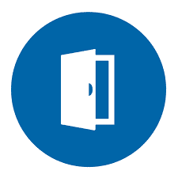
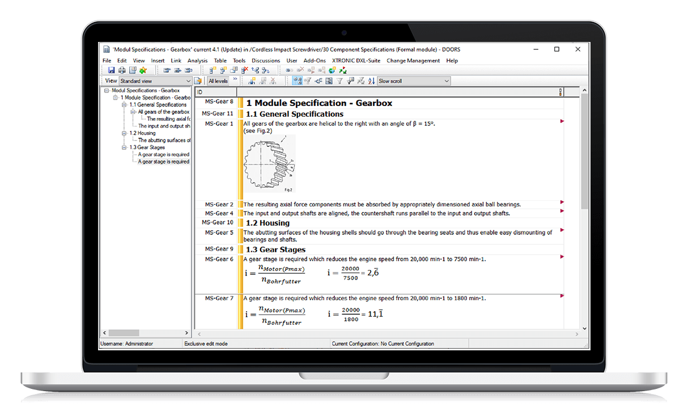

Mis on siis Case Uppercase vahendid?
UpperCase tööriistad on tarkvaraarenduse elutsükli varajastele etappidele keskenduvad CASE-tööriistad. Need aitavad nõuete analüüsis, süsteemi modelleerimisel ja kõrgetasemelises disainis, võimaldades luua süsteeminõuete ja disainilahenduste visuaalseid esitusi.
Mille jaoks neid kasutatakse?
Millisedi vahendid olen ise kasutanud?
Draw.Io ja Microsoft Project
Näited tööriistatest mida ei ole kasutanud
IBM Rational Rose
Programmi nimi on: IBM Doors


Mida Sellega teha saab?
IBM Rational Rose
Programmi nimi on: IBM DoorsMida Sellega teha saab?
IBM DOORS Web Access võimaldab veebis hallata nõudeid ja nende muudatusi. Saab linkida nõuded disaini, testide ja teiste süsteemi osadega. Toetab koostööd tarnijate ja arendajatega ning integreerub erinevate Rational ja kolmandate osapoolte tööriistadega.
Microsoft Visio
Programmi nimi on: Microsoft Visio

Mida Sellega teha saab?
Microsoft Office Visio on diagrammi- ja vektorgraafika rakendus ning on osa Microsoft 365 Businessist. Sellega on võimalik joonistada diagramme, graafikuid ja teledga geomeetriga